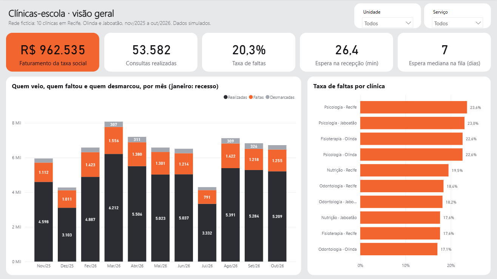

A segunda de manhã falta mais
Na segunda de manhã, 27,6% dos pacientes não aparecem. Nos outros turnos, perto de 19%. Quem justifica cita trabalho e transporte.
Um ano de atendimentos de 10 clínicas-escola de saúde em Recife, Olinda e Jaboatão: planilhas e sistema padronizados em Python, relatório no Power BI e um painel para a gestão.
Uma clínica-escola é onde estudantes de saúde atendem a comunidade por uma taxa social, supervisionados por professores. Este projeto analisa um ano dessa operação numa rede fictícia.
Duas fontes que não conversam. Odontologia e Fisioterapia exportam do sistema; Psicologia e Nutrição anotam numa planilha, uma aba por mês. O filtro da exportação repete o último dia do mês anterior: 830 agendamentos vinham em dobro.
Cinco jeitos de escrever falta. “Faltou”, “F”, “Não compareceu”, “faltou ” com espaço no fim. Data como texto, horário como “8h”, linha copiada, prontuário em branco. No tablet da recepção, o motivo vem em texto livre: “choveu muito”, “sem passagem”.
Vinte regras, provadas. Simulei a rede, baguncei os dados como na vida real e padronizei tudo em Python. Como guardei a verdade, os testes provam linha a linha que a limpeza está certa.
20,3%
das consultas marcadas viraram falta: 13.683 horários vazios no ano.
R$ 962.535
de taxa social faturada em 53.582 consultas realizadas.
Os mesmos números do Power BI, calculados em Python. Clique numa clínica para filtrar.
Visão geral · nov/2025 a out/2026
Realizados
53.582
Taxa de faltas
20,3%
Agenda ocupada
84,4%
Espera mediana
7 dias
Horas de prática perdidas
16.515 h
Dados fictícios, gerados por simulação. Os mesmos números do relatório no Power BI.
Primeiro, ela chega assim, digitada à mão.
Planilha da Psicologia de Recife, aba de março, linha 13: horário como “9h”, situação em minúscula, prontuário em branco.
Depois, entra no padrão.
As regras R03 e R05 traduzem “atendido” para Realizado e “9h” para 09:00, e o turno sai da hora.
Então, é ligada ao paciente certo.
A regra R07 recupera o prontuário pelo nome, só quando o nome é único no cadastro. Homônimo fica sinalizado, não adivinhado.
Por fim, vira indicador.
A consulta soma uma hora de prática ao aluno e entra na taxa de faltas da clínica, no Python e no Power BI.
Psicologia - Recife.xlsx · MAR 2026 · linha 13
Depois das regras R03 e R05
Regra R07 · nome único no cadastro
Psicologia · Recife · março de 2026
Edite as linhas: a mesma lógica da padronização em Python roda aqui, na hora. Uma linha por atendimento, campos separados por “·”.
No padrão
| Data | Horário | Situação | Regras |
|---|
Forma desconhecida não é adivinhada: a linha vai para a lista de conferência.
34%de chance de faltar
Taxa de faltas medida nas 12.411 primeiras consultas do período, por faixa de espera. Quem esperou até 7 dias falta 19% das vezes.
Taxa de faltas por dia e turno
Agenda ocupada por clínica (rótulo: espera mediana)
Alunos de 2026.1 e a meta de horas
Na segunda de manhã, 27,6% dos pacientes não aparecem. Nos outros turnos, perto de 19%. Quem justifica cita trabalho e transporte.
A Fisioterapia de Olinda usa 41,5% da agenda e tem a maior fila: 114 dias de espera mediana. A primeira consulta só é marcada às segundas e quartas.
121 de 183 alunos bateram a meta de horas em 2026.1. Outros 43 teriam batido se os pacientes não tivessem faltado.
Oito páginas, 36 medidas DAX e um modelo estrela. Cada número foi conferido contra o Python dentro do motor do Power BI.

Confirmar a consulta na véspera
Se a segunda de manhã caísse para a média dos outros turnos, seriam 613 faltas a menos no ano.
Chamar a fila de Olinda todo dia
387 pessoas esperam por Fisioterapia em Olinda, com 58% da agenda livre.
Escalonar a chegada na Odontologia
Quem tem o 2º horário do turno espera 7 minutos a mais: o atraso de uma sessão passa para a seguinte.
Encaixe para quem falta muito
Metade das faltas vem de 19% dos pacientes: 2.769 pessoas.
Lista suspensa na planilha e no tablet
29.943 situações escritas fora do padrão deixariam de existir.
Faturamento, faltas, motivos, fila e espera na recepção, com filtro por unidade, números que contam e um assistente que responde as perguntas da gestão.
Abrir o painel animadoAntes de dados, trabalhei seis anos na Aeronáutica. Na odontoclínica, eu fazia o faturamento das guias dos planos de saúde; no hospital, coordenava os estágios com as universidades. Clínica e aluno são o mundo deste projeto.
Os dados são fictícios porque dado de saúde não vai para um repositório público. Simular trouxe uma vantagem: guardei a verdade e consegui provar que a limpeza está certa, linha a linha, em vez de só achar que está.
O Python padroniza e calcula. O Power BI tem o Power Query, o modelo estrela e 36 medidas DAX, cada uma conferida contra o Python. O painel animado e o painel de trabalho mostram o mesmo resultado para quem decide e para quem atende.
Se você trabalha com clínicas, escolas ou qualquer operação que vive de planilha, eu gostaria de conversar.
Diego Santiago
Analista de dados · Recife